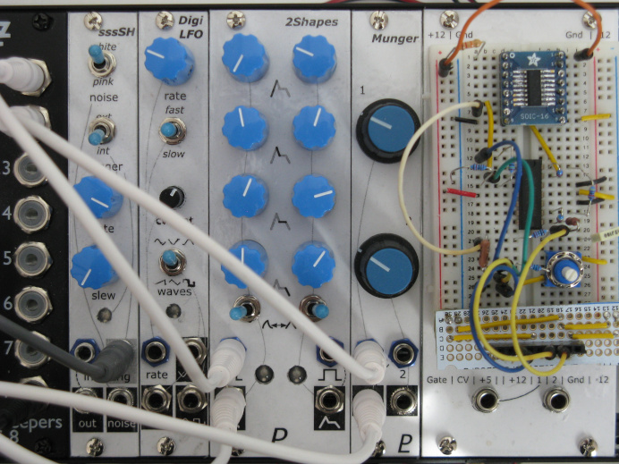

I’m Len, and this is my web site.
Projects
I have published many of my software and hardware projects on GitHub.
Recent
- Modular Synth
- Designs for Eurorack synthesizer modules
- Op Amp Tester
- Tests op amp chips to verify that they are working
Utilities
- asentry
- Monitor the JPL Sentry database for asteroid impact threats. Just in case, you know?
- MakeVersionInfo
- Microsoft Visual Studio utility to automatically update a project’s version number
Archived Projects
- DaveyBot
- A computer that plays Guitar Hero and Rock Band
- ToyBot
- A toy car that drives around by itself
- LED Clock
- A retro LED clock made with recycled parts
Programming
- RP2040 Windows Development Setup
- How to set up a C/C++ development environment for the Raspberry Pi Pico and other RP2040 dev boards on Windows
- RP2040 ADC Accuracy
- Getting the most out of an analog-to-digital converter
Other Stuff
- Earthship Ark
- World-building for an RPG campaign based on The Starlost
- Obsidian Portal
- Various RPG campaigns I’ve played
- flickr
- Photos of things